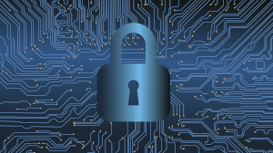
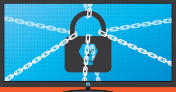
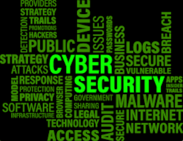

Cibersegurança, ou segurança cibernética, é um termo utilizado para se referir às práticas, processos e tecnologias projetados com voltadas para proteger redes, sistemas de computadores, dispositivos e dados contra ameaças, ataques e acessos não autorizados. O objetivo principal é a garantia de proteção, confidencialidade, integridade e disponibilidade de informações e dados digitais.
Cabe dizer também que os termos cibersegurança e segurança da informação, embora relacionados, têm diferenças. A cibersegurança é mais específica, focando em proteger sistemas digitais contra ameaças online imediatas, como malware e phishing.
Já a segurança da informação é mais abrangente, cobrindo todas as formas de informação, incluindo dados físicos, e envolve práticas estratégicas, como gestão de riscos, controle de acesso e políticas organizacionais. Enquanto a cibersegurança utiliza tecnologias específicas, a segurança da informação incorpora elementos físicos, políticos e procedimentais, visando uma proteção contínua e abrangente.
A cibersegurança deve integrar as estratégias de gestão e mitigação de riscos das empresas. Há uma série de razões que justificam a importância de investir nesse assunto. A seguir, destacamos algumas das principais.
Por mais protegida que uma rede seja, a segurança de computadores só é completa quando a cibersegurança também monitora quem a acessa.
A gestão de acesso trabalha para detectar eventuais comportamentos suspeitos de pessoas que tentam entrar em uma rede, tomando as medidas de segurança que se façam necessárias.
Incidentes cibernéticos podem trazer prejuízos financeiros consideráveis para as empresas, incluindo custos legais, custos de recuperação e pagamento de indenizações a terceiros prejudicados.
Perceba que são muitos aspectos a serem considerados. E é justamente nesse contexto que se destaca a necessidade de as empresas incluírem o tema de cibersegurança em seus planejamentos. Aleksandro Oliveira Domingues Marques, Coordenador de Segurança da Informação e Privacidade da Positivo, destaca:
Em um mundo cada vez mais digital, a cibersegurança não é uma opção, mas uma necessidade. Ela é capaz de garantir a proteção e a manutenção das atividades, gerando mais confiança aos stakeholders.
Entre os métodos de ataque mais utilizados pelos criminosos está o phishing. Ele é um tipo de ataque que usa e-mail, SMS, telefone e técnicas de engenharia social para induzir a vítima a compartilhar informações pessoais ou a baixar arquivos maliciosos que instalam vírus nos dispositivos.
Outro método bastante comum é o malware, um programa ou código criado com a intenção de causar danos à rede, ao computador ou ao servidor. Ele é o tipo mais comum de ataque e contempla diversos subtipos: os trojans, vírus, spyware, bots, keyloggers, entre outros.
Há também o ransomware, que atua como uma espécie de sequestro digital. Um código malicioso restringe o acesso ao sistema afetado, deixando os dados inacessíveis. Geralmente, os criminosos exigem um resgate, a ser pago em criptomoedas devido à sua dificuldade de rastreamento.
Assegurar a cibersegurança é uma missão para as empresas. Considerando a natureza dinâmica e em constante mudança do panorama de ameaças cibernéticas, a prática deve ser implementada como uma estratégia permanente do negócio.
Aleksandro aponta algumas estratégias cruciais que as empresas devem implementar para reforçar sua postura de cibersegurança.
As empresas têm contato diário com uma quantidade significativa de dados sensíveis, entre eles, informações sobre clientes, dados financeiros e sigilosos sobre propriedade intelectual. Portanto, uma violação de segurança pode causar a exposição desses dados, gerando perdas financeiras, problemas legais e danos à reputação da organização.
Muitas empresas e setores têm regulamentações rigorosas relacionadas à segurança de dados, ainda mais com o estabelecimento da LGPD (Lei Geral de Proteção de Dados) — as instituições que trabalham com saúde são um grande exemplo disso. Então, para garantir o cumprimento dessas orientações e normas, as organizações devem investir em boas práticas, evitando a aplicação de penalizações legais.
As empresas precisam estar atentas às boas práticas de segurança empresarial, especialmente no que diz respeito à cibersegurança. Afinal, como você viu, à medida que a tecnologia evolui, também evoluem as práticas criminosas no ambiente digital.
Por isso, acompanhar as tendências permite que a organização esteja preparada para lidar com os desafios que ainda podem surgir. E a primeira delas é a segurança em nuvem. Esta prática está se tornando cada vez mais relevante no contexto empresarial diante da crescente adoção de serviços baseados em nuvem.
Além das estratégias que mencionamos no trecho anterior, uma série de ferramentas de segurança podem ser incluídas no plano de cibersegurança da empresa. Entre eles, destacamos as que estão listadas a seguir.
Para proteger a rede é interessante implementar firewalls que realizarão o monitoramento e controle do tráfego de rede, permitindo ou bloqueando as comunicações com base na política de segurança.
mplementação de softwares de proteção contra vírus e malware em dispositivos finais, como computadores e dispositivos móveis. Além disso, é indicado promover o gerenciamento de acessos e permissões para dispositivos finais, garantindo que apenas os dispositivos autorizados consigam acessar a rede.